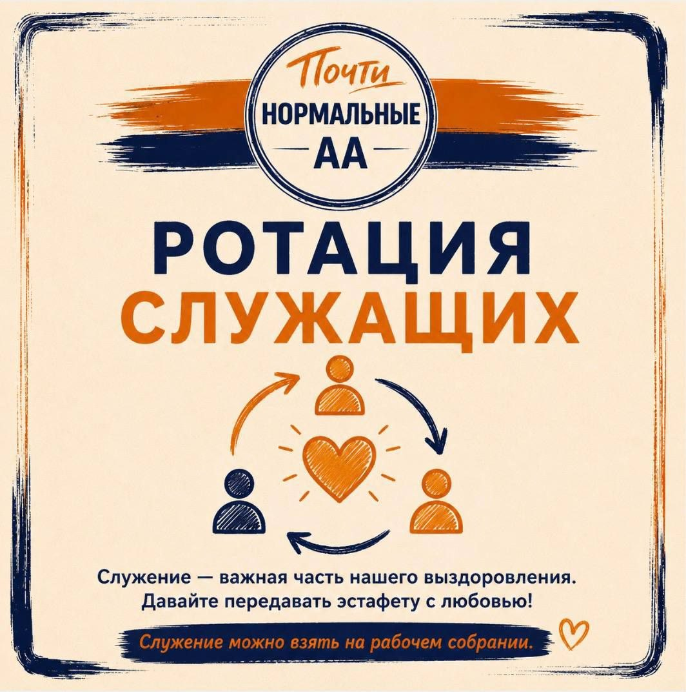
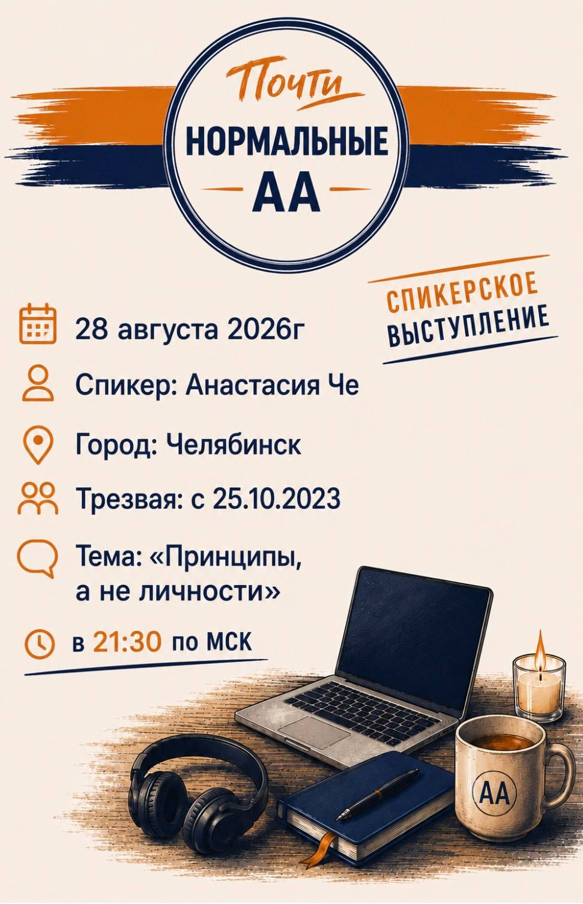
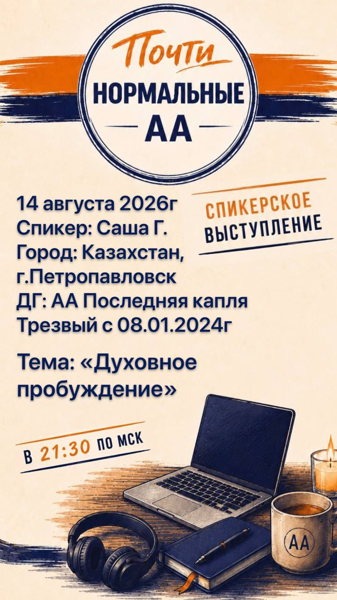
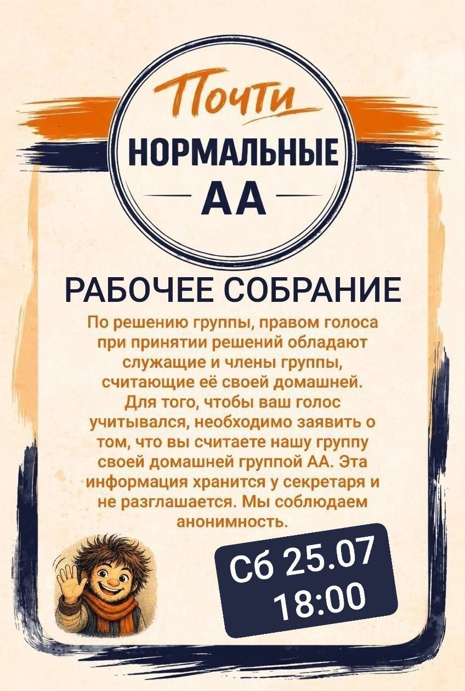
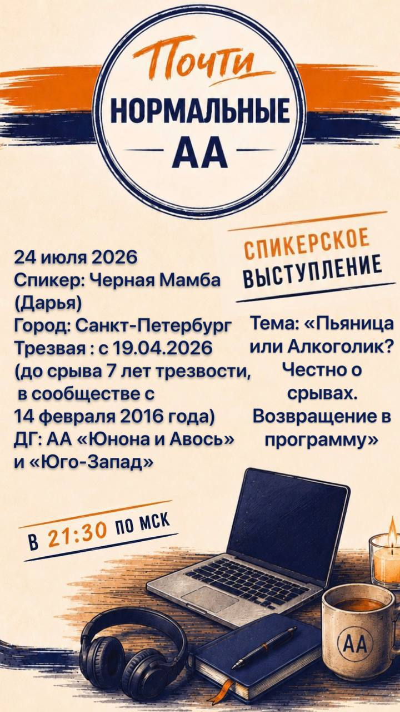
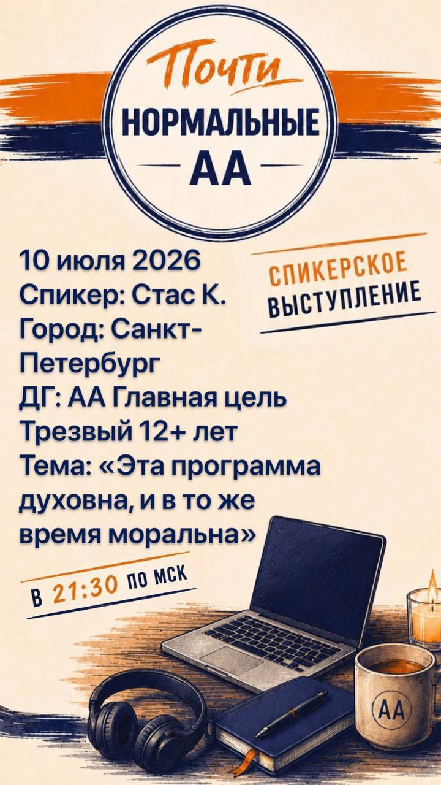
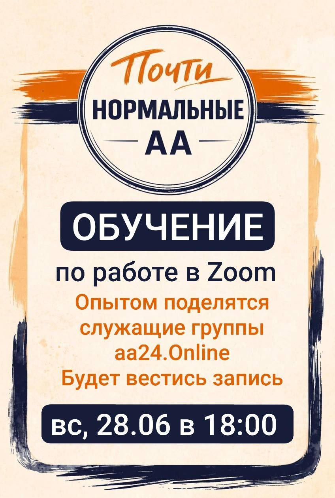

Объявления

📢 Ротация в группе «Почти нормальные»
Друзья, у нас приближается ротация служений ⏰
— Ведущие собраний
— Технические ведущие собраний
— Рассыльные анонсов (Tg, MAX)
📝 Что такое ротация в АА?
Это плановая смена служащих и передача служения другим членам группы. Ротация помогает нам не «прирастать» к служению, даёт возможность новым членам АА попробовать себя в служении и вместе поддерживать жизнь группы.
Это про смирение, доверие, ответственность и «принципы выше личностей» ✅
Ротация напоминает нам, что группа принадлежит не отдельным людям, а всему групповому сознанию. Служение — важная часть нашего выздоровления: оно помогает оставаться включёнными в жизнь группы, быть полезными, расти и выздоравливать вместе ❤️
📌 Служение можно взять на ближайшем рабочем собрании 29.08.26 в 18:00 или написать секретарю группы.
Давайте с любовью передавать эстафету и опыт друг другу 🙏
Пора уступить место, чтобы кто-то другой смог послужить ✨

📣 Спикерское выступление в группе АА «Почти нормальные»
📆 28 августа 2026
В 21:30 по МСК
Спикер: Анастасия Че
Город: Челябинск
Трезвый с 25.10.2023 г.
Тема: «Принципы, а не личности»
❤️ Собрание проходит в Zoom:
https://us06web.zoom.us/j/5487249245?pwd=UE3buqca6pTDt8kGPJDW9pRoaC7gkt.1
📲 Мы в Телеграме:
https://t.me/+mta_CKQY2c05ODRi

📣 Спикерское выступление в группе АА «Почти нормальные»
📆 14 августа 2026
В 21:30 по МСК
Спикер: Саша Г.
Город: Казахстан, г. Петропавловск
ДГ: АА Последняя капля
Трезвый с 08.01.2024г
Тема: «Духовное пробуждение»
❤️ Собрание проходит в Zoom:
https://us06web.zoom.us/j/5487249245?pwd=UE3buqca6pTDt8kGPJDW9pRoaC7gkt.1
📲 Мы в Телеграме:
https://t.me/+mta_CKQY2c05ODRi



